个性化模态加权真的个性化吗？——逐用户权重主张的受控审计
这篇论文的正式标题是 Is Personalized Modality Weighting Actually Personalized? A Controlled Audit of Per-User Weighting Claims in Multimodal Recommenders。作者 Jingyuan Zheng、Xin Zhang、Yang Gu、Dongjing Wang、Yuxiang Wang、Xudong Shen、Haiping Zhang、Youhuizi Li 与 Dongjin Yu 来自杭州电子科技大学，合作机构包括杭州师范大学和网易游戏伏羲 AI 实验室；论文于 2026 年 8 月 6 日公开在 arXiv:2608.05655。作者已公开审计代码、逐种子结果与作图脚本。这不是一篇再造新权重网络的论文，而是把六类常见逐用户模态权重压到同一协同骨干上，审计它们究竟带来了内容收益、身份依赖，还是对推荐真正有用的用户特异信号。
多模态推荐里的逐用户权重可以因用户而异，也可能在打乱用户—权重绑定后让指标下降；但既有评估没有排除单一全局模态尺度与逐用户头额外容量，因而这些现象尚不能证明用户特异的模态偏好真正改善了推荐。
1. 背景和问题
1.1 被审计的不是“内容有没有用”，而是“模态权重是否必须逐用户”
多模态推荐通常同时使用视觉、文本、声音、标签或元数据。一个自然直觉是：有人更看画面，有人更依赖字幕或音乐，因此系统应该为每个用户学习不同的跨模态权重。工程实现也很多：直接为每个用户存一行权重，令注意力门控读取用户协同向量，用超网络产生权重，或用低秩用户向量控制模态组合。不同用户最后得到不同权重，这件事本身并不难；真正困难的是证明这些差异对应了可泛化的模态偏好，而不是模型把用户身份编码进了一个高容量参数头。
论文特别收窄了主张范围。它不否定多模态内容能够改善排序，也不审计所有图多模态融合、去噪或会话级动态路由架构；它只问显式的逐用户标量/向量/门控权重是否比一个全局共享的模态权重更好。这个边界非常重要：若全局权重相对纯协同模型已经明显提升，正确结论是“内容及其统一尺度有用”；只有逐用户权重继续超过全局权重，才能把增量归因到跨用户不同的模态组合。
这里的全局权重 GM 也不是“完全不个性化”的推荐器。GM 仍为每位用户保留自己的协同嵌入 $p_u$，所以它照样根据用户历史学习“这个人喜欢什么”；它只把视觉、文本、音乐等通道之间的权重 $w_m$ 设为所有用户共享。作者因此把要隔离的变量限定为“跨模态权重是否逐用户”，而不是“推荐分数是否个性化”。若把 GM 错写成非个性化基线，就会把协同向量已有的用户差异误算给模态门控。
1.2 既有消融遗漏了两个混淆
常见消融是移除某个模态、移除某个权重头，或将新模型与无内容 BPR 比较。这些设计能回答“内容通道或模块是否参与了结果”，却不会直接切断用户 $u$ 与其权重 $w_{u,cdot}$ 的绑定。于是至少有两个混淆仍在：第一，所有用户共同受益于一个更合适的全局内容尺度；第二，逐用户头比全局标量多出参数和非线性容量。只要对照没有同时控制这两点，排名提升仍可能被包装成“逐用户模态偏好”。
作者把证据拆成三个不能互换的问题。第一，用户是否收到不同权重，这是输出差异；第二，把某用户权重换给同活动度的另一用户，性能是否下降，这是绑定的可识别性；第三，真实逐用户头是否超过强全局权重，这是额外效用。前两个问题即使回答“是”，第三个仍可能为“否”。尤其是共享协同嵌入同时驱动推荐分数与权重门控时，置乱权重会破坏一条身份相关的高容量路径，下降只说明这条路径被模型使用，不能说明它承载了视觉、文本或音乐偏好。
这种区分还涉及“潜在概念”和“可观测量”的距离。真实的用户模态偏好是一个不可直接观察的构念；权重向量、离线指标和置乱掉点只是模型输出。若训练日志从未说明一次正反馈究竟由画面、字幕还是音乐触发，增加逐用户头只会给模型更多记忆身份的自由度，不能凭空产生模态信用分配。论文因此要求跨独立语料和指标看方向是否一致，再用结构干预定位掉点来源。即使两个方案容量接近，只要没有隔离用户绑定，正结果仍可能来自身份路径；反过来，负结果也必须用信号植入证明审计流程并非失明。
因此，本文的核心审计标准不是“用户权重有方差”，也不是“shuffle 会掉点”，而是逐用户头必须在 real-GM 效用对照上胜过全局权重，同时才有资格解释 real-shuf 的身份绑定信号。这套标准把“内容有用”“参数依赖用户身份”“用户特异模态偏好有用”分成递进证据，避免用较弱命题替代较强命题，也让负结果的边界能被独立复核，而不是依赖作者对权重可视化的主观解释。
2. 方法
2.1 同一协同骨干上的六类逐用户权重头
为消除不同论文骨干、训练预算和评估协议的差异，作者把全部头放到同一个矩阵分解协同骨干。用户—物品分数写成： 符号解释：$u$ 和 $i$ 分别是用户与物品；$p_u$、$q_i$ 是 64 维协同嵌入；$b_i$ 是物品偏置；$m$ 枚举视觉、文本、音乐或元数据通道；$s_m(u,i)$ 是模态特定物品向量与共享物品向量的余弦相似度；$w_{u,m}$ 是待审计的模态权重。内容相似度另有全局可学习尺度，将其限制在有界区间，防止内容项压过协同项。BPR 基线令全部 $w_{u,m}=0$；GM 则学习： 符号解释：$w_m$ 是所有用户共享的第 $m$ 个模态权重，任意用户都使用同一组跨模态尺度。GM 仍通过 $p_u^\top q_i$ 做用户个性化，只是不让 $w_m$ 随用户变化。所有逐用户头的输出层都从零初始化，使它们在训练起点与 GM 相等；随后在相同数据、损失、种子和评估下学习，差异才能较干净地归因于权重生成机制。
六个头覆盖四种参数化和两个解耦版本。PUM 是 $U\times M$ 的自由用户表，对每行做 softmax；ATT 用双线性注意力读取共享协同向量： 符号解释：$W_{\mathrm{att}}$ 将 64 维 $p_u$ 映射到 $M$ 个模态 logit，softmax 使权重非负且和为一。MWN 使用两层超网络： 符号解释：$operatorname{MLP}$ 是 $64\rightarrow64\rightarrow M$ 的 ReLU 网络。LRG 不读 $p_u$，而用独立的 8 维用户向量 $g_u$ 与共享基矩阵 $G$： 符号解释：$g_u\in\mathbb{R}^8$，$G\in\mathbb{R}^{8\times M}$，二者产生 $M$ 维模态权重。PUM、LRG 的用户参数与协同路径分开，ATT、MWN 则直接读取共享 $p_u$，这条结构差异正是后续混淆诊断的切入点。
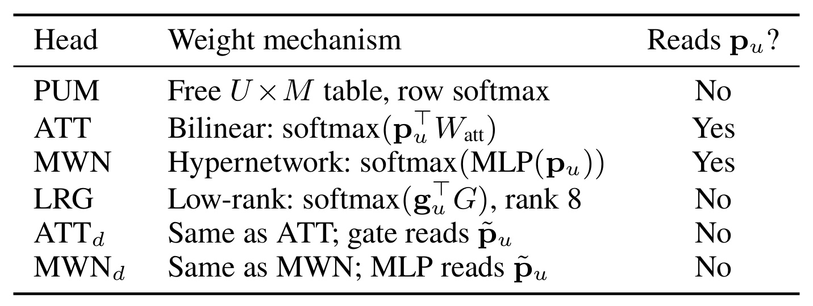
原文 Table 1 不是简单的模型清单，它把“权重是否逐用户”和“权重头是否读取协同身份表示”分开。六个头都会给用户产生不同权重，但只有 ATT 与 MWN 把推荐主路径的 $p_u$ 直接送进门控；PUM 是自由表，LRG 读独立的 $g_u$，ATTd/MWNd 则改读私有嵌入。因而若巨大的 real-shuf 只集中在 ATT/MWN，而没有对应的 real-GM，最合理的结构解释不是它们更会恢复模态偏好，而是同一个 $p_u$ 同时参与推荐和权重生成，使权重成为用户身份的旁路。表中最后一列由此定义了一个可检验分组：共享 $p_u$ 门控头与独立嵌入头应在身份置乱敏感度上呈现不同模式；后续结果确实如此。它也提醒复现者，不能只按“参数多或少”分组，信息是否与推荐主路径共享才是关键结构变量。
2.2 real-GM 与 real-shuf：效用和身份绑定分开审
作者为每个头 $h$ 定义效用差： 符号解释：$operatorname{Perf}$ 可以是 PairAcc、NDCG@20 或 Recall@20；$h_{\mathrm{real}}$ 是正常用户—权重绑定的逐用户头；GM 是单一全局模态权重。$Delta_U>0$ 表示逐用户权重在同一协同骨干上超过了强非逐用户替代，这才是“个体模态权重增加效用”的直接证据。论文称它为 real-GM。 可识别性差另写为： 符号解释：$h_{\mathrm{shuf}}$ 不重新训练模型，只在评估时把用户的已学权重替换为同活动度十分位中另一用户的权重，重复五次并平均。$Delta_I>0$ 表示用户与权重的原始绑定会影响预测，因此称为 real-shuf；它并不包含 GM，所以不能回答该绑定是否比全局权重更有用。只有 real-GM 直接检验新增推荐效用，real-shuf 只检验绑定是否影响模型。置乱限制在同活动度十分位，是为了不把活跃度导致的协同表示差异混入模态偏好；若在训练期置乱，模型还能通过用户嵌入吸收这个双射，反而无法有效破坏绑定。
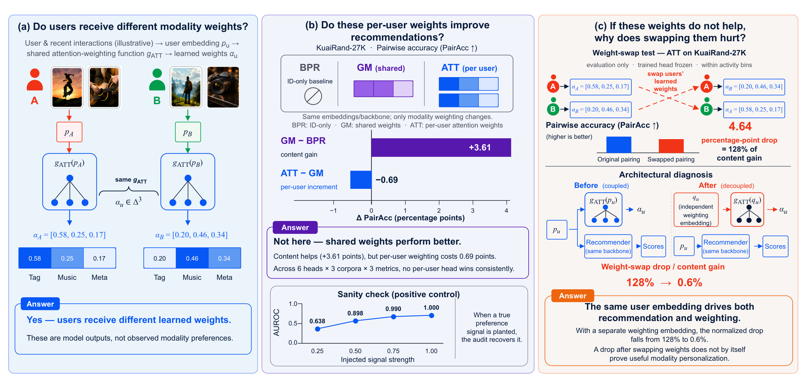
Figure 1 把论文最容易被混淆的推理顺序画得很清楚。左面板中的 A、B 得到不同 $alpha_u$，只能说明模型输出不同，且作者明确标注它们不是观察到的真实模态偏好。中间面板显示 KuaiRand-27K 上 GM 相对 BPR 得到 +3.61pp，而 ATT 相对 GM 是 -0.69pp：内容有效，但把权重改成逐用户反而损失效用。右面板再展示同一个 ATT 在交换权重后下降 4.64pp，即内容收益的 128%；若只看这一步，很容易宣称“用户权重高度个性化”。但门控输入解耦后该比例跌到 0.6%，说明置乱破坏的是共享协同身份路径。最下方 AUROC 正控制又说明审计并非看不见真信号。整幅图因此不是三条并列结果，而是一条证据优先级：先问 real-GM，再解释 real-shuf，最后用结构干预和正控制排除替代解释。
2.3 门控输入解耦：切断协同身份信息的旁路
ATTd 与 MWNd 保留原门控函数和参数规模，只把输入换成不进入协同打分的私有嵌入： 符号解释：$g$ 是 ATT 或 MWN 的门控映射；$p_{u,gate}$ 是单独训练的权重嵌入，不参与 $p_u^\top q_i$ 的推荐主路径；上标 $(d)$ 表示 decoupled。这个干预并未禁止权重逐用户，也没有把头退化为全局常数，它只切断“同一身份向量同时驱动协同打分与门控”的共因。如果耦合头的 real-shuf 来自真实模态偏好，换成独立权重嵌入后仍应保留；若主要来自共享身份容量，它应大幅坍缩。训练与推理都保持这条隔离，因此结果不是评估期临时加噪，而是对门控信息来源的结构性对照。
2.4 信号植入与统计协议：先证明审计仪器看得见真信号
负结果需要回答“是否只是测量工具不敏感”。作者为每个用户随机指定一个潜在偏好模态，并在训练和评估时放大该模态内容分数，强度取： 符号解释：$alpha$ 是植入剂量；每位用户的目标模态从可用模态中均匀抽取。作者用 learned weight 预测被植入模态，计算 capture AUROC，并同时观察 real-shuf，要求两者随 $alpha$ 单调上升。这个正控制不能证明自然日志一定包含模态偏好，但能证明：若存在至少与植入信号同量级的用户结构，审计流程有能力捕获它。
主审计在每个配置上使用五个随机种子，报告配对 $t$ 检验，并在每个数据集—指标内对六个头做 Benjamini–Hochberg FDR 校正。主指标 PairAcc 计算保留曝光对上的成对排序正确率，最接近“两个模态可能给出不同顺序时，个体权重是否选对”；NDCG@20 与 Recall@20 是排序质量补充。评估置乱默认五次，附录扩到二十次检验收敛。这样的统计设计仍不是因果识别用户心理偏好，但比单次训练、单一消融和不匹配骨干更能约束结论。
3. 实验结果
3.1 数据、任务与统一训练口径
三套主语料来自不同短视频平台。Tsinghua ShortVideo 筛到 4,099 名至少 30 次曝光的活跃用户，含 256 维视觉、128 维文本和元数据三通道；KuaiRand-27K 有 27,285 名用户和约 290 万训练期物品，使用 58 维标签、39 维音乐和 22 维元数据；MicroLens-100K 有 100,000 名用户、19,738 个物品，使用 1,024 维 CLIP-RN50 视觉与 1,024 维 BGE-M3 文本。每个用户按时间把历史依次切成训练、验证、测试三等份，短视频以观看比例作为隐式偏好代理，并从模态特征中排除时长，防止标签和输入机械耦合。
附录的 Amazon-Baby 是跨域电商复现，过滤后有 4,382 名用户、6,883 个物品、67,060 条交互，含视觉和文本两通道。所有头共同使用 Adam、学习率 $10^{-2}$、权重衰减 $10^{-6}$、批量 8192、15 个 epoch、五种子、99 个评估负例和 $K=20$。论文审计的是同一协议下的内部相对差，不能把这些离线代理指标直接外推成线上满意度或心理偏好。
3.2 全局权重先拿走了多少内容收益
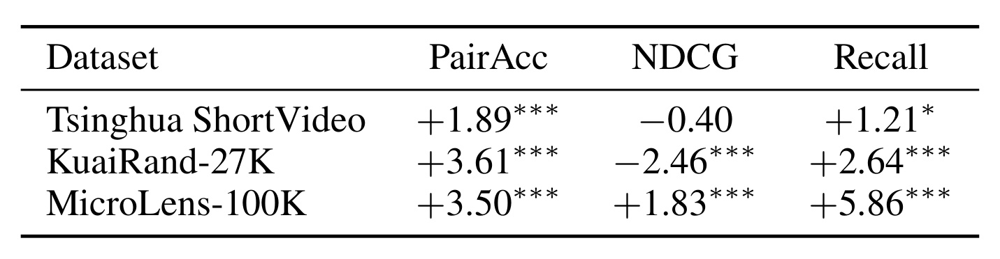
Table 2 先确立了一个正事实：内容不是没用。GM 相对无模态 BPR 的 PairAcc 在 Tsinghua、KuaiRand、MicroLens 分别提升 +1.89、+3.61、+3.50 个百分点，三个 $p$ 值均小于 .001；Recall 也分别为 +1.21、+2.64、+5.86pp。与此同时 NDCG 并非一律上升：Tsinghua 是 -0.40，KuaiRand 是 -2.46，MicroLens 才是 +1.83pp。这表明全局内容项可能改善暴露对的成对偏好与召回覆盖，却重排 top-20 内部位置而牺牲 NDCG。论文没有把这种指标张力藏起来；更关键的是，后续每个逐用户头都在同一张力下与 GM 配对，所以审计问题不是 GM 是否完美，而是把 $w_m$ 改成 $w_{u,m}$ 能否稳定增加同一指标。
3.3 real-GM：个体头没有稳定新增效用
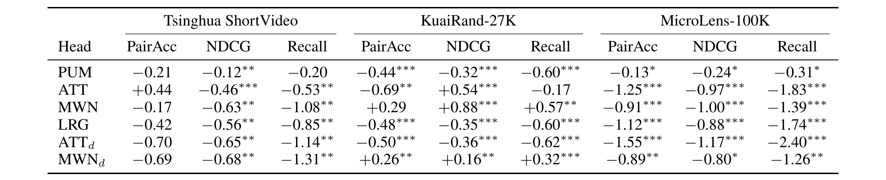
Table 3 是全文最重要的效用证据。Tsinghua 上六头的 NDCG 与 Recall 全为负，PairAcc 也只有 ATT 的 +0.44 是正数且未通过表中的 FDR 标记；KuaiRand 上 MWN/MWNd 出现少量正格，最大是 MWN 的 NDCG +0.88pp，但同一头在 Tsinghua 和 MicroLens 的九项比较中全面转负；MicroLens 的六头乘三指标共 18 格全部为负。也就是说，没有任何实现跨三个语料、三个指标稳定胜过 GM，少量正值不超过约 0.9pp且会随数据与指标翻转。这个结论不能写成“逐用户权重永远无效”，但足以否定在当前四类参数化、三种短视频日志与统一骨干下的普遍增益主张。
值得留意的是解耦版本并没有自动改善效用。ATTd 在三语料上几乎全面为负，MWNd 仅在 KuaiRand 有 +0.26/+0.16/+0.32pp，而在另外两套语料仍为负。这说明“切断身份旁路”只是在诊断 real-shuf 膨胀来源，不是作者提出的新推荐增强方法。审计的结论应保持否定性边界：解耦让可识别性解释更干净，却不创造自然日志中缺少的模态信用分配信号。
3.4 real-shuf：可识别不等于有用
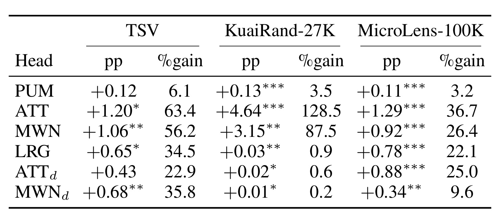
Table 4 展示了完全不同的画面。ATT 的 real-shuf 在 Tsinghua、KuaiRand、MicroLens 分别为 +1.20、+4.64、+1.29pp；换算成各语料 GM-BPR PairAcc 内容收益，分别是 63.4%、128.5%、36.7%。MWN 也达到 56.2%、87.5%、26.4%。如果把“打乱会掉”直接等同于“个性化有用”，KuaiRand ATT 甚至像是比全部内容收益还强；但 Table 3 中它的 real-GM PairAcc 是 -0.69pp。相反，解耦 ATTd/MWNd 在 KuaiRand 只剩 0.6% 与 0.2%。因此 real-shuf 准确回答的是模型是否依赖原始用户—权重绑定，不是该依赖是否超过全局权重，也不是它是否对应可解释的模态偏好。
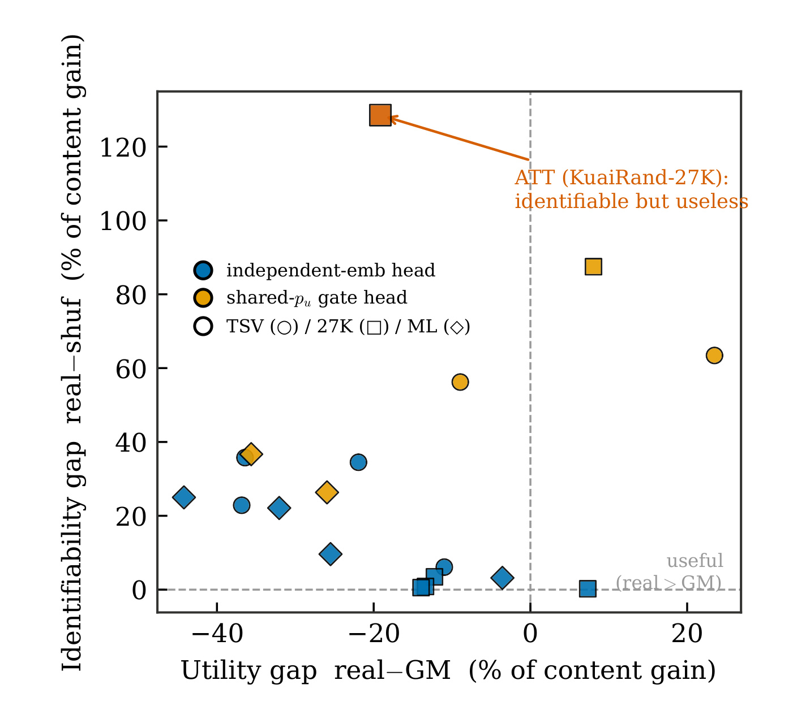
Figure 2 将所有头按 PairAcc 内容收益归一化后放进二维平面：横轴是 real-GM，向右才表示逐用户权重超过 GM；纵轴是 real-shuf，向上只表示绑定更可识别。KuaiRand ATT 位于最醒目的左上角，纵轴约 128%，横轴却小于零，正是“identifiable but useless”的极端案例。橙色共享 $p_u$ 门控头整体更容易升到高纵轴，蓝色独立嵌入头则多靠近低纵轴；但两类点都没有系统落在右上角。这个结构分布比单个掉点数字更有解释力：能识别哪个权重属于哪个用户，可能只是在识别用户身份，而不是识别对排序有增量的视觉/文本偏好。右下象限虽标为 useful，也只有少量点靠近；图中没有形成稳定的“高效用且高可识别”簇，这与跨语料不能复现正效用的主表一致。
3.5 解耦和信号植入：混淆来源与测量能力
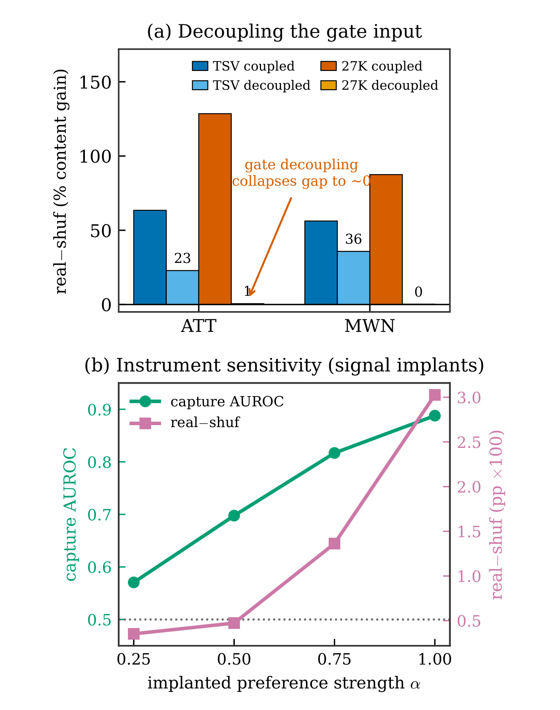
Figure 3(a) 给出接近因果干预的结构证据。KuaiRand 的 ATT 从耦合时 128% 内容收益降到解耦时约 1%（精确表值 0.6%），MWN 从约 87% 降到接近 0（0.2%）；效用结论没有反转。Tsinghua 的下降较弱，ATT 从约 63% 到 23%，MWN 从 56% 到 36%，说明共享身份旁路能解释最夸张的 KuaiRand 膨胀，却未必解释所有语料中的全部绑定信号。Figure 3(b) 是另一条证据：随植入强度从 0.25 增到 1.0，capture AUROC 从约 0.57 单调升到 0.89，real-shuf 也同步增到约 3pp。前一面板说明自然数据的高 real-shuf 可由结构混淆制造，后一面板说明真正植入用户模态结构时审计确实会响应；两者一起才支持“自然 null 不是测量失灵”。
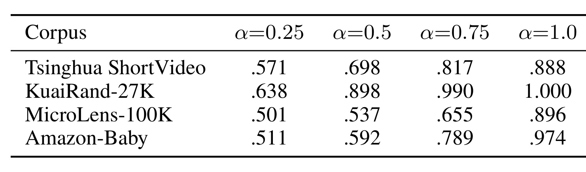
Table 12 把正控制从主文两套语料扩展到四套。Tsinghua 的 AUROC 从 0.571、0.698、0.817 升到 0.888；KuaiRand 从 0.638、0.898、0.990 到 1.000；MicroLens 从接近随机的 0.501 升到 0.896；Amazon-Baby 从 0.511 升到 0.974。四行都严格单调，说明仪器对植入剂量有一致响应。边界也要说清：植入使用随机指定模态和人为放大内容分数，且为单种子定性校准，它证明的是“若存在这类可学习结构，流程能看见”，并不证明自然用户偏好恰好具有同样生成机制，更不能把 AUROC 的提升当成线上推荐收益。
作者把 $alpha=0.25$ 视为弱信号锚点：Tsinghua 为 0.571，KuaiRand 为 0.638；自然数据若远弱于这一量级，确实可能仍难发现。但这不会救回当前逐用户头的效用主张，因为即便存在更弱的潜在偏好，它也没有在 real-GM 上产生稳定可测增量。正确措辞是“在当前日志与指标的可识别尺度上，没有发现有用的逐用户模态权重”，而不是“现实中不存在任何用户模态差异”。
3.6 容量、置乱次数与冷启动反驳
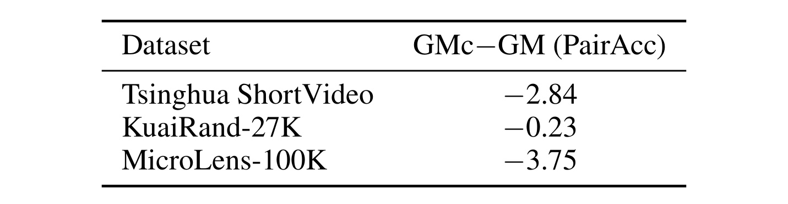
Table 7 回应了 GM 是否只是参数太少的稻草人。GMc 给全局路线加入与 MWN 相当的两层容量，但让网络按物品内容生成权重，而不按用户身份生成。结果 GMc 相对 GM 的 PairAcc 在 Tsinghua、KuaiRand、MicroLens 分别是 -2.84、-0.23、-3.75pp；KuaiRand 的 NDCG 和 Recall 还分别下降 7.59 与 16.77pp。额外容量没有提升全局权重，反而在两套语料明显伤害排序，因此简单 GM 接近更强的可用全局对照。不过这项结果也不能反向证明用户门控更好：一个内容条件门控训练不稳，只能说明 GMc 不是有效增强，不能把它的失败算成逐用户个性化的胜利。
置乱次数也做了稳健性检查。作者把 Tsinghua 的评估置乱从五次扩到二十次，在六头上的 gap 变化最多 0.11pp，每次置乱标准差为 0.17–0.38pp，显著小于 ATT/MWN 约 1.2pp 的耦合 gap。这排除了“128% 只是五次随机置换偶然抽到坏匹配”的解释。需要注意该扩展只用前三个种子，主要支持数量级收敛，不应把 0.11pp 当作所有语料的普适误差界。
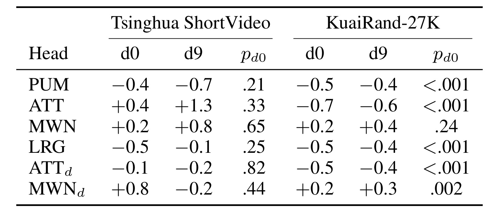
Table 9 检查一个看似最有希望的例外：协同历史少的冷用户或许更需要内容模态个性化。若该假设成立，最冷十分位 d0 应集中出现正 real-GM。Tsinghua 的 d0 在六头上正负混杂，$p$ 值 0.21–0.82，统计力不足以确认收益；KuaiRand 每个十分位约 2,700 用户，四个头在 d0 显著为负，ATT 为 -0.7、PUM/LRG/ATTd 约 -0.5，MWN/MWNd 只有 +0.2 且没有冷端集中。d9 也未呈现相反的清晰梯度。因此至少在当前静态用户权重和隐式观看反馈下，低活跃并不是隐藏稳定收益的子群。这个切片按活动度做诊断而非重新训练，不能回答专为冷用户设计的新门控是否有效；它只说明现有六个头没有在最应受益的自然分层中显露一致增量。
3.7 跨域与骨干复现
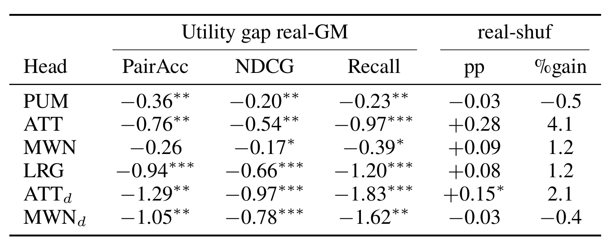
Table 10 把审计从短视频迁到电商。GM 相对 BPR 在 Amazon-Baby 的 PairAcc、NDCG、Recall 分别增加 +6.97、+5.61、+9.26pp，是四语料中内容收益最大的一个；但六头乘三指标共 18 个 real-GM 格全部为负，范围约 -0.20 到 -1.83pp，其中 17 格通过 FDR。real-shuf 也没有短视频中的膨胀：最高是 ATT 的 +0.28pp，仅占内容收益 4.1%，唯一通过 FDR 的 ATTd 是 +0.15pp、2.1%。这组结果强化了两个分离结论：电商视觉/文本内容非常有用，但把两通道权重做成逐用户并未增加效用；共享身份门控的置乱膨胀也会随用户数、稀疏性和表示容量而变化，不是固定规律。
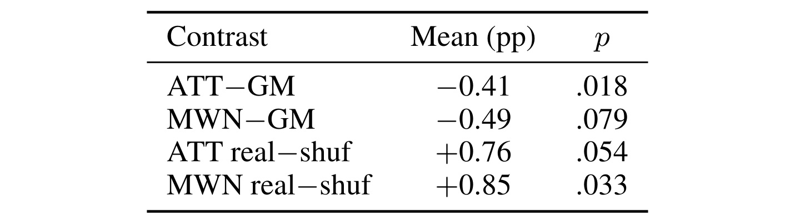
Table 11 再把矩阵分解骨干换成两层 LightGCN，用户与物品嵌入在归一化交互图上传播并平均第 0–2 层，其余头、对照与评估不变。Tsinghua 三种子结果中，ATT-GM 为 -0.41pp（$p=.018$），MWN-GM 为 -0.49pp（$p=.079$）；与此同时 ATT real-shuf 为 +0.76pp，MWN real-shuf 为 +0.85pp，后者 $p=.033$。方向仍是效用不胜 GM、绑定却可识别，说明解离并非矩阵分解独有。不过作者谨慎限定：LightGCN 下内容收益只在 Recall 为正，所以该表复现的是双对照关系，不是“全局内容收益在所有指标上也复现”。
综合主表、解耦、正控制和附录，论文的证据链较完整：全局权重先取得实质内容收益；逐用户头没有跨语料与指标的稳定增量；高 real-shuf 可与负 real-GM 共存；切断共享身份输入能消除最夸张的置乱 gap；植入真结构时工具能单调恢复；容量、置乱次数、冷用户、跨域与骨干替换没有改写主结论。最需要坚持的解释纪律是：real-shuf 证明“权重绑定被模型使用”，不证明“该绑定对推荐比全局权重更有用”，更不等于识别了用户真实的模态心理偏好。
4. 总结
4.1 我的判断与可迁移标准
这篇工作的价值在于重新定义了个性化主张的最低证据，而不是证明某个简单模型永远优于复杂模型。对显式逐用户模态权重，至少应同时报告：GM-BPR 说明内容及全局尺度有没有用；real-GM 说明逐用户机制是否增加效用；real-shuf 说明用户—权重绑定是否可识别；再用门控输入解耦或等价干预排除共享身份旁路，并用信号植入验证审计灵敏度。若 real-shuf 阳性而 real-GM 阴性，最稳妥结论只能是“模型依赖用户绑定，但没有证据表明该逐用户权重优于全局权重”。
这个逻辑也可迁移到推荐之外。RAG 中按用户生成检索权重、Agent 中按用户调工具路由、长期记忆中按用户产生读写门控，都可能因为共享用户嵌入而在置乱后明显掉点。要证明机制真正有用，应与最强共享参数或群组参数方案做效用对照，而不能只展示参数随用户变化或交换身份会伤害性能。对线上系统，真实价值仍应通过独立用户分层、干预曝光、会话动态和在线实验验证。
4.2 局限与后续跟进
局限至少有五点。第一，范围只覆盖静态、显式的 weighting-class personalization，不能否定图结构融合、会话级动态权重或更一般的多模态推荐。第二，作者审计的是统一骨干上的重实现，而不是六项原工作的官方代码；内部对照更公平，却不能直接推翻原系统在不同骨干和业务约束下的全部报告。第三，观看比例和隐式反馈没有说明一次偏好由画面、文字还是音乐触发，PairAcc 仍是代理；负 real-GM 可能反映日志缺少可识别干预信号，而非用户从无模态差异。第四，三套主语料是短视频，Amazon-Baby 虽扩域但仍为稀疏隐式电商；强反馈、教育内容、长视频、搜索会话等场景尚未覆盖。第五，信号植入为单种子、合成偏好模态，LightGCN 也只做 Tsinghua 三种子，两项稳健性证据的统计广度低于主审计。
后续最值得做三类实验。其一，构造缺失模态自然实验、反事实曝光或会话级交互轨迹，让“哪种模态贡献了反馈”具备可识别性，再检查 real-GM 是否转正；这能区分方法无效与日志不可识别。其二，在原作者代码和更多骨干上实现同一 GM/real-GM/real-shuf/decoupling 套件，并报告训练预算、参数量和在线延迟，验证结论是否跨实现成立。其三，把用户身份门控替换为可解释的可靠性统计、场景状态或短期会话证据，做跨时间稳定性与在线 A/B；若真正的偏好是动态而非静态，长期用户表本来就可能选错参数化。
最后应把论文结论压缩为一句有边界的话：在六类显式逐用户权重、三套短视频语料、一个跨域电商语料和两种协同骨干的受控审计中，单一全局模态权重已拿走主要内容收益，逐用户头没有稳定增加推荐效用；某些头虽然高度依赖用户—权重绑定，但该可识别性主要受共享协同身份路径影响，不能被写成对“用户真实模态偏好有用”的证据。